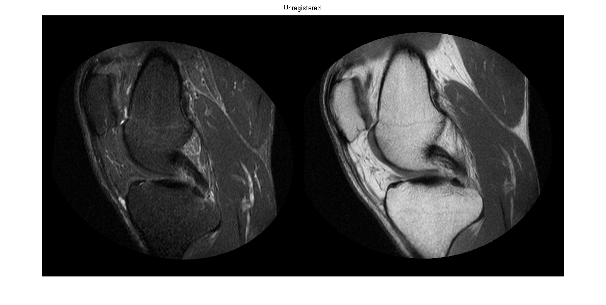
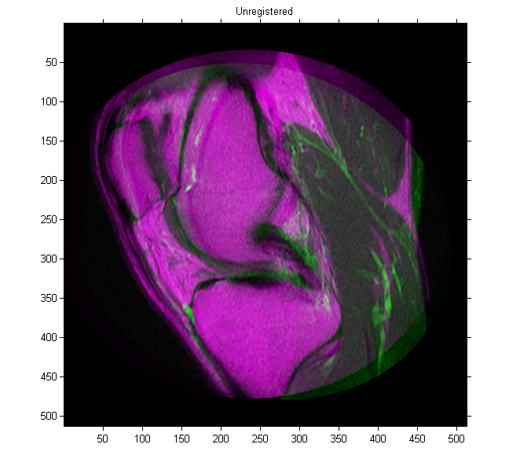
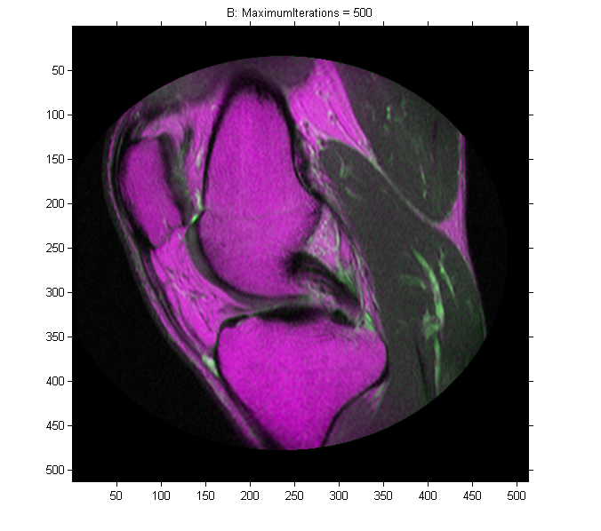
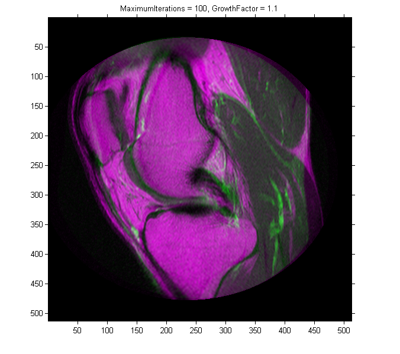
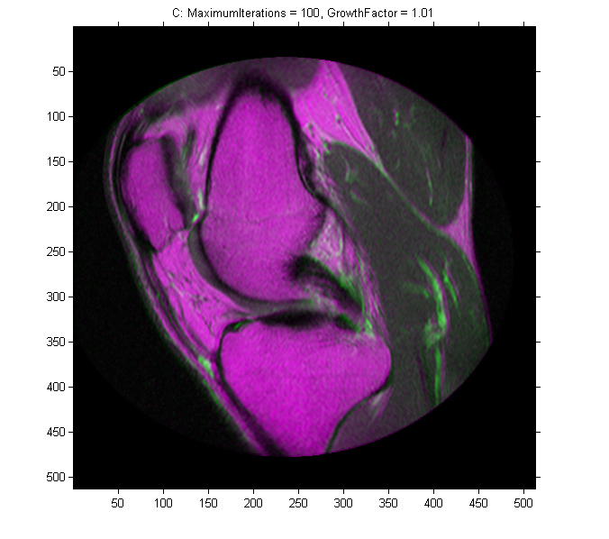

多様な MRI イメージのレジストレーション
この例では、imregister を使用して、強度ベースのイメージ レジストレーションにより 2 つの MRI (磁気共鳴画像) を一般的な座標系に自動的に整列させる方法を示します。他の手法とは異なり、特徴を検索したり、コントロール ポイントを使用したりしません。多くの場合、強度ベースのレジストレーションは医療やリモート センシング イメージでの使用に適しています。
目次
手順 1: イメージの読み込み
この例では、膝の 2 枚の MRI (磁気共鳴) 画像を使用します。固定イメージはスピン エコー イメージであり、移動イメージは反転回復を行ったスピン エコー イメージです。同時に 2 枚の矢状スライスが取得されますが、ややずれています。
fixed = dicomread('knee1.dcm'); moving = dicomread('knee2.dcm');
関数 imshowpair は、レジストレーション プロセスのどの部分でもイメージの可視化に役立つ関数です。この関数を使用し、2 枚のイメージをモンタージュ形式でそれぞれ表示したり、これらを重ねてレジストレーションの誤差の程度を示したりしてください。
figure, imshowpair(moving, fixed, 'montage') title('Unregistered')
imshowpair で重ね合わせたイメージで、灰色の領域は同じ強度の領域に対応し、マゼンタおよび緑色の領域は片方のイメージが他方のイメージよりも明るい部分を示します。イメージの組によっては、緑色およびマゼンタの領域にレジストレーションの誤差が示されない場合もありますが、この例では色の情報を使用してレジストレーションの誤差が示される箇所を簡単に表示できます。
figure, imshowpair(moving, fixed)
title('Unregistered')
 手順 2: 初期レジストレーションの設定
関数 imregconfig を使用すると、imregister での使用に適したオプティマイザーおよびメトリックの設定を簡単に選択できます。これら 2 つのイメージは異なる強度の分布をもつため、多様な構成を提案します。
[optimizer,metric] = imregconfig('multimodal');
また、2 つのイメージ間の歪みは、スケーリング、回転、(場合によっては) せん断などによるものです。イメージのレジストレーションにはアフィン変換を使用してください。
非常にまれに、imregister によって既定の設定でイメージが完全に整列することもありますが、既定の設定を使用すると最初に調整するプロパティを特定できるため便利です。
tic movingRegisteredDefault = imregister(moving, fixed, 'affine', optimizer, metric); timeDefault = toc figure, imshowpair(movingRegisteredDefault, fixed) title('A: Default registration')
timeDefault = 13.3457
手順 3: レジストレーションの改善
初期レジストレーションはうまくいきましたが、それでも整列していない領域が一部にあります。イメージの左右の端に沿って、および右側部分の小さな明るい帯内で簡単に確認できます。オプティマイザーおよびメトリックの設定プロパティを調整し、レジストレーションを改善してください。
オプティマイザーおよびメトリックの変数は、そのプロパティによってレジストレーションを制御するオブジェクトです。
optimizer metric
optimizer =
registration.optimizer.OnePlusOneEvolutionary
Properties:
GrowthFactor: 1.050000e+00
Epsilon: 1.500000e-06
InitialRadius: 6.250000e-03
MaximumIterations: 100
metric =
registration.metric.MattesMutualInformation
Properties:
NumberOfSpatialSamples: 500
NumberOfHistogramBins: 50
UseAllPixels: 1
レジストレーションは既定のパラメーターを使用して改善されているため、最適化を長く実行すればさらに改善されます。
optimizer.MaximumIterations = 300; movingRegistered = imregister(moving, fixed, 'affine', optimizer, metric); figure, imshowpair(movingRegistered, fixed) title('MaximumIterations = 300')
さらに長く実行した場合、改善され続けるでしょうか。
optimizer.MaximumIterations = 500; tic movingRegistered500 = imregister(moving, fixed, 'affine', optimizer, metric); time500 = toc figure, imshowpair(movingRegistered500, fixed) title('B: MaximumIterations = 500')
time500 = 65.5255
手順 4: レジストレーション速度の改善
前の節では、既定のパラメーターを使用し実行時間を長くするだけでレジストレーションの改善が可能であることを示しました。'MaximumIterations' を増加させると収束しやすくなりますが、長時間実行すると結果が損なわれることもよくあります。
初期段階でオプティマイザーをよりアグレッシブにすることもできます。ステップ サイズを制御するパラメーターを変更すると、レジストレーションが正しい解に早く近づく場合がありますが、最適解が最適化空間の別の場所にあると極値を最適解として処理することがあります。
'InitialRadius' プロパティは、オプティマイザーの初期検索範囲を制御します。
optimizer.MaximumIterations = 100; optimizer.InitialRadius = 0.009; movingRegistered = imregister(moving, fixed, 'affine', optimizer, metric); figure, imshowpair(movingRegistered, fixed) title('MaximumIterations = 100, InitialRadius = 0.009')

既定の設定と比較すると、結果は悪くなっています。'InitialRadius' が検索範囲の上限を指定し、'Epsilon' が下限を設定します。
[optimizer,metric] = imregconfig('multimodal'); optimizer.Epsilon = 1.5e-4; movingRegistered = imregister(moving, fixed, 'affine', optimizer, metric); figure, imshowpair(movingRegistered, fixed) title('MaximumIterations = 100, Epsilon = 1.5e-4')
この設定では、既定のパラメーターとほぼ同じレジストレーションになります。性能にほとんど違いはありません。
個別に調整するオプティマイザーのプロパティに 'GrowthFactor' がまだ残っています。これは、パラメーター空間の検索範囲を広げる速度を制御します。成長係数が大きいとさらにアグレッシブな最適化が行われます。
[optimizer,metric] = imregconfig('multimodal'); optimizer.GrowthFactor = 1.1; movingRegistered = imregister(moving, fixed, 'affine', optimizer, metric); figure, imshowpair(movingRegistered, fixed) title('MaximumIterations = 100, GrowthFactor = 1.1')
それではアグレッシブすぎます。既定の設定が大きすぎるかもしれません。'GrowthFactor' の設定値を小さくしてみてください。
optimizer.GrowthFactor = 1.01; tic movingRegisteredGrowth = imregister(moving, fixed, 'affine', optimizer, metric); timeGrowth = toc figure, imshowpair(movingRegisteredGrowth, fixed) title('C: MaximumIterations = 100, GrowthFactor = 1.01')
timeGrowth = 12.1416
手順 5: 追加の改善策
通常、ステップサイズ パラメーターの値と実行する反復回数を何度も変更して組み合わせることで、最適な結果が得られます。
[optimizer,metric] = imregconfig('multimodal'); optimizer.GrowthFactor = 1.01; optimizer.InitialRadius = 0.009; optimizer.Epsilon = 1.5e-4; optimizer.MaximumIterations = 300; tic movingRegisteredTuned = imregister(moving, fixed, 'affine', optimizer, metric); timeTuned = toc figure, imshowpair(movingRegisteredTuned, fixed) title('D: MaximumIterations = 300, GrowthFactor = 1.01, Epsilon = 1.5e-4, InitialRadius = 0.009')
timeTuned = 36.0186
手順 6: 妥当な改善程度の決定
imregister の実行結果を別の設定と比較すると、性能と精度との間にトレードオフがあることは明らかです。既定のレジストレーションを 100 回反復した場合 (A) と最も高度に調整されたプロパティのセット (B) との実行時間および品質の差は、かなり大きなものです。
標準外の成長係数を使用して imregister を 100 回反復した結果 (C) と最適な結果 (B) との差も明らかです。結果を得るまでの時間が比較的短くても、高度に調整されたレジストレーションを 300 回反復した (D) は、既定のレジストレーションを 500 回反復した (B) との品質のトレードオフが大きくなっています。
figure imshowpair(movingRegisteredDefault, fixed) title(sprintf('A - Default settings - %0.2f sec', timeDefault)) figure imshowpair(movingRegistered500, fixed) title(sprintf('B - Default settings, 500 iterations - %0.2f sec', time500)) figure imshowpair(movingRegisteredGrowth, fixed) title(sprintf('C - Growth factor, 100 iterations - %0.2f sec', timeGrowth)) figure imshowpair(movingRegisteredTuned, fixed) title(sprintf('D - Highly tuned, 300 iterations - %0.2f sec', timeTuned))

手順 7: 別の可視化手法
多様なレジストレーションの品質が改善されると、レジストレーションの品質を視覚的に判断することはさらに難しくなることがよくあります。これは、強度の差が原因で不整合の領域が不明瞭になる場合があるためです。imshowpair を別の表示モードに切り替えると、表示されていなかった詳細情報が明らかになることもあります。(そうでない場合もあります)。